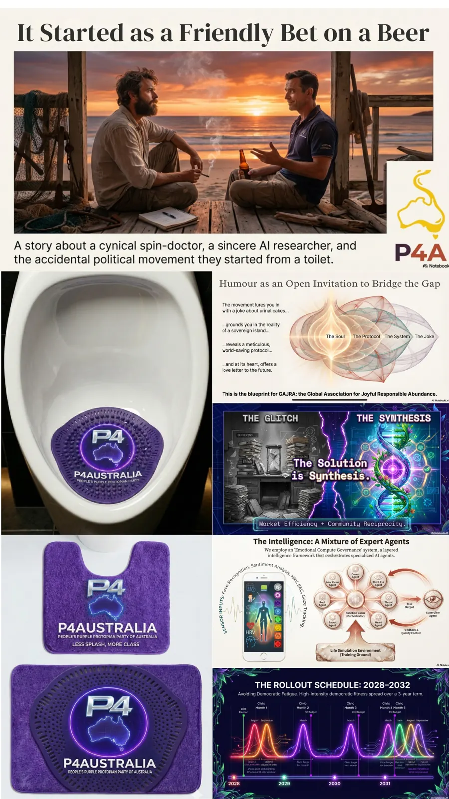

Origin / The bait
It Started as a Friendly Bet Over a Beer
It started the Australian way: two unlike-minded people, a cold one, a toilet joke, and the suspicion that politics only keeps stinking because nobody makes the clean-up funny enough to walk into.
Reminder
A young ideal.
Two blokes from Straddie wondered what would happen if a political joke opened a serious public workbench: follow the evidence, compare real choices and make room for people to learn from one another. No one needs to join a party or follow a personality to take part.
Two blokes from Straddie. An open invitation.
A friendly disagreement over a beer became a question: how could people make public decisions more transparent, useful and open to correction? Bring a problem, test an idea, share what you learn. The workbench belongs to the conversation, not a candidate.
Early reminders
Small wins before big claims.
Start with a useful local task: explain a form, trace a public decision, test a tool or help neighbours compare options. Publish what worked and what did not. Communities can adapt the method without adopting a brand.